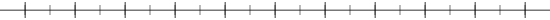
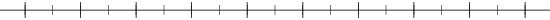
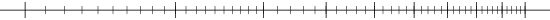

Logarithms and the distribution of data (Benford's law)
This is an experiment in the natural distribution of data.
I have made a .pdf that you can use to doodle on.
It has both normally ruled and logarithmically ruled lines.
- Find a list of at least 20 numbers (for example, a table of properties of the elements in a chemistry handbook).
Other places to look are the population of US states, or of the countries in a particular region, or GDP or area in either square
miles or hectares, areas of the world's largest lakes, stock prices, etc.
- These should be empirical data, not artificially constructed numbers such as phone numbers.
- They should span several orders of magnitude, not be tightly bunched like student GPRs.
- Plot the numbers on a normal number line with scale 0 to 9.9999, with the first digit removed.
For example: 38,133,256 with first digit removed is 8,133,256, which will get plotted as 8.133256.
The distribution should be roughly uniform, since the second digit is completely random.
Below is an image file that you can use if you need.

- Plot the numbers intact (Recording the mantissa of each–this is the numerical part in scientific notation, so that
38,133,256 = 3.8133256 * 107 gets plotted as 3.8133256).
You should find them strongly bunched to the low end (e.g., many more numbers begin with 1 than with 9).
Below is an image file that you can use if you need.

- Plot the intact numbers on a logarithmic scale.
Thus you either use the log scale rule between 1 and 10, or take the logarithm of the mantissa, and plot them on normal
scaled paper between 0 and 10. These two methods give the same points on the line,
one should do one and not both.
The distribution should now be uniform!
Below is an image file that you can use if needed.

- This result makes sense if you think about what happens when you put
the decimal point back in.
The number of data points between 10 and 11 ought to be roughly the same
as the number between 9 and 10, right? But if the data really span
several orders of magnitude randomly, then the number between 10 and 11
should be about the same as the number between 1.0 and 1.1, and that is
far fewer than the total number between 1 and 2.
Last modified: Sun Mar 4 09:39:57 CST 2018